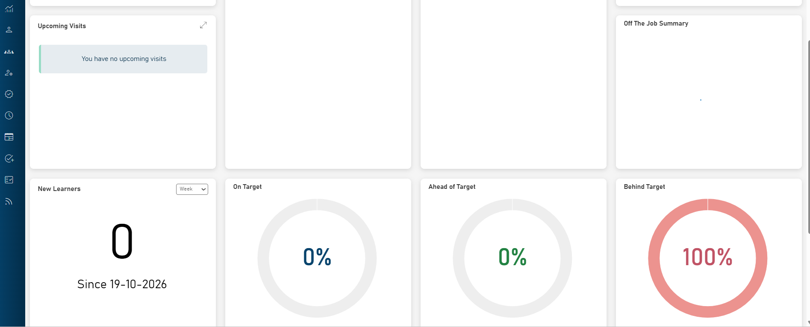
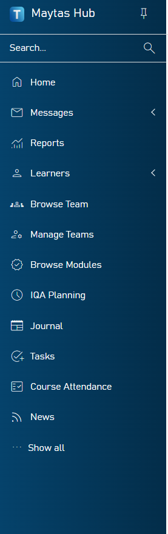
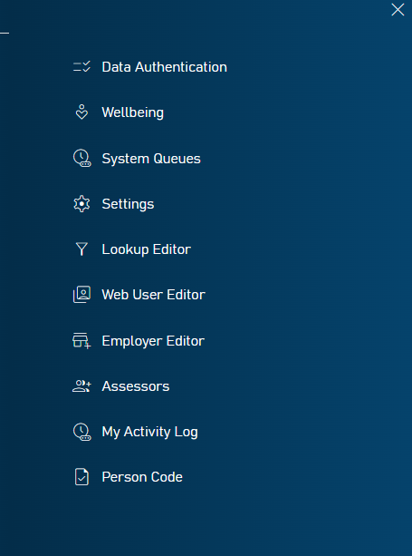
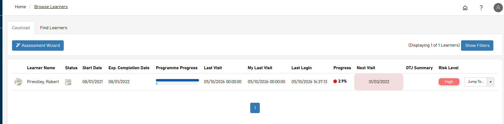
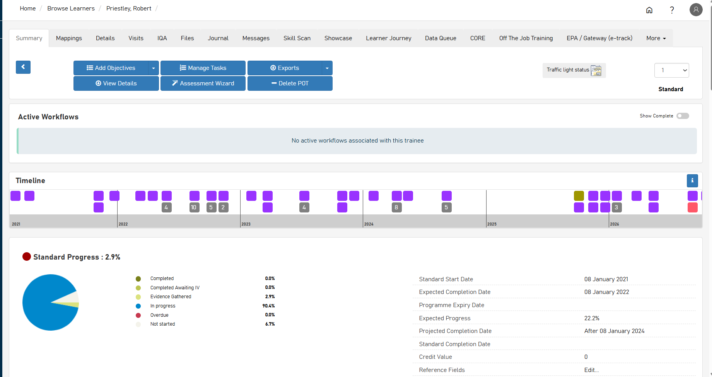
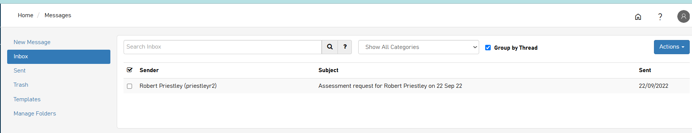

Pick a guide
No guides match that search. Try a shorter word.
Logging in and getting around
Log in
- Go to etrack.wolvcoll.ac.uk/etrack in any web browser.
- Under "Or enter your details below", enter the Username and Password allocated to you. Don't use Sign in with Microsoft: that's for apprentices.
- Click Log in. You land on Your Dashboard.

Apprentices sign in differently
Apprentices click Sign in with Microsoft and use their college login details. They must set up multi-factor authentication (MFA) on their college account first, or they can't sign in. Check this at induction (Guide 6).
Forgotten your password?
Click Forgotten Password? under the Log in button, enter your details and follow the link in the email.
Pin the menu open
The menu down the left shows icons only. Hover over it, or click the T logo, to see the names. Click the pin icon to keep it open.
Your Dashboard
Start every week here. The dashboard is made of panels:
| Panel | What it shows |
|---|---|
| My Learners | Your apprentices, each with a progress bar and percentage |
| Calendar | Visits and events by month. Click a date to see that day; click + to add an event |
| Notifications | Priority (red), warning (amber) and informative (purple) alerts, such as learners behind target |
| Unread Messages | New messages from apprentices |
| Awaiting Assessment | Evidence submitted and waiting for you, with an Assess button |
| Upcoming Visits | Your next planned visits |
| Off The Job Summary | Off-the-job hours across your learners |
| New Learners | Learners added this week (change the drop-down for a longer period) |
| On / Ahead of / Behind Target | The percentage of your learners in each group |



Turn on Team Dashboard at the top right to see your team's learners. Click the expand icon on any panel to open it full size.
The menu
| Menu item | Used for |
|---|---|
| Home | Your dashboard |
| Messages | Inbox, sent messages and templates (Guide 10) |
| Reports | Caseload and programme reports |
| Learners | Browse Learners and your caseload (Guide 2) |
| Browse Team | Learners across your team |
| Browse Modules | Standards and qualifications in e-track |
| IQA Planning | Internal quality assurance sampling |
| Journal | Journal entries |
| Tasks | Tasks set for learners |
| Course Attendance | Attendance records |
| News | College e-track news |
- Items with a < arrow (Messages, Learners) open a sub-menu.
- Show all at the bottom adds more items, such as Wellbeing and My Activity Log. The editors and settings there are for e-track administrators.
- Type in Search... at the top of the menu to find a learner by name.
- The top bar shows where you are, for example Home / Messages. Click any part to go back.




Your active caseload
Your caseload lives on the Browse Learners screen. The My Learners panel on your dashboard gives a quick view too.
- In the left menu, click Learners → Browse Learners. Or click the expand icon on the My Learners dashboard panel.
- Stay on the Caseload tab. The count at the top right shows how many learners are listed.
- Click Show Filters to narrow the list, for example to active learners only.
- Click a learner's name to open their record, or use Jump To... at the end of the row to go straight to visits, messages or files.
Not on your caseload?
Use the Find Learners tab. Team leaders can use Browse Team in the menu.
Check every week
- Overdue next visits
- Red progress dots and High risk levels
- Old last-login dates
- The Awaiting Assessment panel


Reading the columns
| Column | What to look for |
|---|---|
| Status | The learner's current status icon |
| Start Date / Exp. Completion Date | Programme dates. Learners past their expected completion date need action |
| Programme Progress | How far through the programme they are |
| Last Visit / My Last Visit | Last contact by anyone, and by you |
| Last Login | When the apprentice last used e-track. Long gaps mean low engagement (Guide 11) |
| Progress | Evidence progress, with a coloured dot. Red means behind target |
| Next Visit | Next planned visit. Highlighted red when overdue |
| OTJ Summary | Off-the-job hours position (Guide 12) |
| Risk Level | The current risk rating, such as High (Guide 9) |
The Assessment Wizard button on this screen starts an assessment for a learner (Guide 8).
An apprentice's progress
Open the learner from your caseload (Guide 2). Their record opens on the Summary tab.


Reading the Summary tab
- Standard Progress is overall progress, with a coloured dot. Red means behind.
- The pie chart splits the standard into Completed, Completed Awaiting IV, Evidence Gathered, In progress, Overdue and Not started.
- Compare Standard Progress with Expected Progress to see how far behind or ahead they are, and check the Projected Completion Date.
- Timeline shows activity year by year. Click a block to see what it was.
- Active Workflows lists open processes. Turn on Show Complete to see finished ones.
- More than one standard? Choose it from the drop-down at the top right.
Remember: progress shows evidence coverage, not quality. Evidence only counts once you've confirmed it, and readiness for end-point assessment is judged in progress reviews.
The tabs on a learner record
| Tab | Use it for |
|---|---|
| Mappings | Gap analysis: evidence against each KSB |
| Details | Learner and programme details |
| Visits | Visits and progress reviews |
| IQA | Quality assurance sampling |
| Files | All evidence in the portfolio |
| Journal | Notes shared with the learner |
| Messages | Messages with this learner |
| Skill Scan | Skills scan results |
| Showcase | Best work for EPA |
| Learner Journey | Key stages of the programme |
| Data Queue | Forms waiting to be completed |
| Off The Job Training | Off-the-job hours (Guide 12) |
| EPA / Gateway | Gateway readiness and EPA |
Creating, conducting and recording a progress review
A progress review is recorded as a visit, with a review form that the apprentice, assessor and employer each complete and sign. Check with your programme manager how often reviews are due for your apprentices.
1. Create the review
- Open the apprentice's record and go to the Visits tab.
- Click Add Visit.
- On the Appointment tab, choose the progress review appointment type and enter the planned date. Untick all day to add a time.
- Click Save. Tell the apprentice and employer the date, and whether it's face to face or online.
2. Conduct the review
- Open the visit and the review form. The apprentice and employer open it from the alert on their Home page by clicking Run Data Form.
- Work through the form together: apprentice section, assessor section, employer section.
- Cover progress against plan, the gap analysis, off-the-job hours, functional skills, wellbeing, and actions from the last review.
- Agree SMART targets with dates.
- Press Save often. To see what others have typed, go to Home and reopen the form.
3. Record and sign off
- Update targets in the visit's Learning Plan tab: target date, plan type and notes.
- Add feedback in the visit's Notes tab.
- Fill in the actual date and outcome on the Appointment tab.
- The apprentice and employer each sign (for example, by entering Y in the sign-off field) and save. Signed forms lock.
- Check every section is complete, then submit the form.
- Update the apprentice's RAG rating (Guide 9).
Is the target SMART?
Would the apprentice know exactly what to do, and by when, without asking you?
Not SMART: "Work on Unit 3."
SMART: "Upload a witness statement for the stock rotation task, mapped to K4 and S2, by 14 November."
Finding past reviews
Go to Visits, open the visit and click Review for a read-only copy.
Save time
On the Appointment tab, choose a notes template from the drop-down and click Insert.
Viewing e-track from the apprentice's perspective
Knowing what apprentices see helps you give clear instructions. Share the Apprentice Guide with them: it walks through each screen in plain English.
What an apprentice sees on their Home page
- A progress bar comparing actual and expected progress
- Units in progress, overdue and completed
- Their next visit, with notes, plan and targets
- A Tasks tab with work set and due dates
- My Portfolio and Submit Evidence buttons
- Your latest feedback, with View All
- Notifications: Info (reminders) and Priority (needs action)
- Alerts for forms to complete, such as progress reviews and skills scans
The apprentice menu
| Menu item | Used for |
|---|---|
| Messages | Contacting their assessor |
| Journal | Notes on their programme or job |
| Files | Their evidence |
| Resources | Learning materials |
| Mappings | Gap analysis of KSBs |
| Visits | Visits, learning plan, past reviews |
| Progress | Actual against expected progress |
| Off The Job Activity | Their off-the-job log |
Apprentices can read their Learning Plan but can't change it.
Guiding apprentices around e-track consistently
Every apprentice should get the same e-track induction, in the same order, in their first weeks. Use this checklist at the first visit and record that it's done in the visit notes.
Induction checklist (about 30 minutes)
Use the same words every time
| Say | Meaning |
|---|---|
| Submit evidence | Use the Submit Evidence button |
| Map it | Tick the KSBs the work covers |
| Gap analysis | The Mappings screen |
| OTJ log | Off The Job Activity |
| Review | The progress review form in your alerts |
Keep it consistent after induction
- Revisit one e-track skill at each of the first three reviews.
- Use the same evidence title format across the team: unit or KSB, short description, date.
- Point apprentices to the Apprentice Guide rather than giving one-off instructions.
How apprentices submit and map evidence
Apprentices should use the Submit Evidence wizard for all evidence. Talk them through it at induction (Guide 6).
The Submit Evidence wizard
- On the Home page, click Submit Evidence.
- Choose Task (work set on the Tasks tab) or Objective (from the Learning Plan). Click Next.
- Click Select, choose the file and click Next.
- To map the work, click Yes. Choose the apprenticeship standard, then the unit or KSB group.
- Tick every KSB or criterion the work shows. Choose another unit to map more if needed. Click Next.
- Optionally click Yes to add a comment for the assessor. Click Next.
- Check the summary and click Finish.
Alternative: an Assessment Request message
- Go to Messages, click New Message and choose Assessment Request as the type.
- Click Attach File, choose the file, then click Upload files.
- Click Suggested Mappings, tick the criteria, click Add Mappings, then Save Mappings.
- Add a message and click Send Message.
Tips to share with apprentices
- Only tick KSBs the work clearly shows. You'll check.
- Use the gap analysis to see which KSBs still need evidence.
- Title files clearly, for example "Unit 3 – Health and safety check – Oct 2026".
- On a phone, photograph the work and submit it straight away.
Off-the-job box
If switched on, the wizard ends with an own-work confirmation and an off-the-job box. Ticking the off-the-job box opens a new log row (Guide 12).
Checking and amending evidence mapping
Each submission arrives as an inbox message titled "Assessment request for [learner] on [date]". Use the Show All Categories drop-down in Messages to list only assessment requests. You can also start from the Awaiting Assessment panel on your dashboard (click Assess), or the Assessment Wizard button.
Check and amend the mapping
- Open the message and click Assess Files.
- Add the file to a new contact (visit), tick the file and click Save.
- On the contact, set the appointment type, completion date and status. Don't click Save yet, as it closes the contact.
- Open the Add/Update evidence tab and select the file from the drop-down on the right.
- Download and review the evidence.
- Check the apprentice's ticks. Untick criteria the evidence doesn't show, and tick any they missed.
- Set the evidence type and click Save.
Evidence submitted against a task
- Open the Tasks tab. The task shows amber.
- Click the task name and choose Complete (it turns green) or Reject.
- Rejecting deletes the mappings, and the apprentice can resubmit against the same task.
Watch out for
- Over-mapping: ticks the work doesn't show
- Under-mapping: KSBs it does show but weren't ticked
- Rejections with no feedback
- Slow turnaround: assess within the team's agreed time
Always give feedback
Add it in the visit's Notes tab, especially when you remove mappings or reject work. Say what's missing and what to do next. Apprentices see it in their Feedback area.
Applying RAG ratings
The primary assessor sets one overall RAG rating for each apprentice after every progress review, and whenever their situation changes. It must reflect every source, not just the main qualification.
Step 1: Gather every source before you rate
- Your review comments and evidence progress (Guide 3)
- Employer comments from the review form
- Functional skills: English and maths levels, exemptions, tutor comments, attendance and exam or EPA dates
- Off-the-job hours against target (Guide 12)
- Attendance, wellbeing or support notes from other staff
- Time left to the planned end date and gateway
Step 2: Decide the rating
| Rating | Suggested criteria |
|---|---|
| Green | On or ahead of expected progress; OTJ hours on track; functional skills achieved, exempt or on track; no concerns from employer or tutors |
| Amber | Slightly behind on evidence or OTJ hours; functional skills not yet achieved with time remaining; minor concerns with an agreed action plan |
| Red | Significantly behind; functional skills not achieved and at risk for gateway; employer, attendance or wellbeing concerns; at risk of a break in learning or withdrawal |
Use the college's agreed definitions where they differ from these.
Step 3: Record it in e-track
- Open the learner's record. On the Summary tab, click Traffic light status at the top right.
- Click Add Entry to set a new rating, or Edit on a row to amend one.
- Choose Red, Amber or Green and write a short reason that names your sources.
- Save, and set actions with dates in the Learning Plan.
When sources disagree
The lowest rating usually wins. An apprentice on track with evidence but with maths not achieved close to gateway is Amber or Red, not Green.
A good recorded reason
"Amber – evidence slightly behind, maths L1 not achieved with exam booked for 9 December, OTJ 30 hours behind; action plan agreed."
Step 4: Follow up
- Red: tell your line manager or programme manager and agree an intervention.
- Amber: review actions at the next contact.
- Recheck the rating whenever new functional skills, attendance or employer information comes in.
Where else it shows
Your caseload also shows each learner's Risk Level (Guide 2). Check it matches your latest rating.
Sending a message to an apprentice
Send a message
- Click Messages in the left menu, then New Message.
- Expand Send To and choose the apprentice.
- Enter a clear subject, for example "Review on 14 November – please prepare".
- Choose the message type from the drop-down.
- Type the message. Keep it short, with one clear action and a date.
- To attach a file, click Attach File, choose it, then click Upload files. It isn't attached until you click Upload files.
- Click Send Message.
Save time with Templates
Save messages you send often, such as review reminders, in Templates.
Good practice
- Use e-track, not personal email or text, so there's an audit trail.
- Reply to apprentices within the team's agreed time.
- Record anything agreed by message in the next visit's notes.


The left panel has New Message, Inbox, Sent, Trash, Templates and Manage Folders. Above the inbox, use Search Inbox, Show All Categories and Group by Thread. Tick messages and use Actions to delete them or mark them read. You can also message from the Messages tab on a learner's record.
Encouraging apprentices to use the app
Apprentices engage more when e-track is one tap away on their phone and their assessor answers there promptly. e-track works in any phone browser.
Get it on their phone at induction
- Help them sign in on their own phone at the first visit, using Sign in with Microsoft and their college login. Their MFA must already be set up.
- Add e-track to their home screen so it opens in one tap.
- Have them send you a first message while you're together, and reply straight away.
Make e-track the normal channel
- Send reminders, review invitations and feedback through e-track, not email or text.
- Reply within the agreed time, so apprentices learn messages get answered.
- Ask a question in each message that needs a reply in e-track.
- Remind them they'll get an email when something needs action.
Show what they can do from their phone
- Check progress and upcoming visits
- Photograph work and submit it as evidence
- Log off-the-job hours straight after an activity
- Read feedback and complete review forms
Spot and act on low use
- Check the Last Login column on your caseload (Guide 2).
- No activity for a few weeks? Message them, then involve the employer if needed.
- Take low engagement into account in the RAG rating (Guide 9).
Logging off-the-job hours
Apprentices log off-the-job (OTJ) training as they go, and you check the log at every contact. The required total must match the apprentice's training plan.
Assessor: set up the log
- Open the apprentice's record and go to the Off The Job Training tab.
- Enter programme duration, working hours per week, days per week and total holiday allowance (including bank holidays).
- Click Save. e-track fills in Learner Total Working Hours (per year) and the Off the job calculator total.
- Check the total matches the training plan. If it doesn't, raise it with the apprenticeship admin team before the apprentice starts logging.
Apprentice: log an activity
- Open Off The Job Activity from the menu or Home page.
- Click Add Row.
- Enter the date (the start date for activity over several days), the hours, where it took place, and a specific description.
- Click Save on the row, then Save at the bottom of the screen.
- The header updates Total Duration of OTJ Activity and OTJ Hours Remaining. A positive remaining figure means the target isn't met yet.
Assessor: check and record
- Review the log at every visit and review. Query vague entries.
- Record OTJ hours delivered in a visit using Number of Hours and the off-the-job Type on the visit's plan tab.
- Compare hours logged with where they should be by now. Shortfalls feed the RAG rating (Guide 9).
- Quick view: the OTJ Summary column on Browse Learners and the Off The Job Summary dashboard panel.
What counts
Learning in paid working hours that is relevant to the standard: taught sessions, online learning, shadowing, mentoring and assignment writing.
What doesn't
Routine day-to-day work, and learning outside paid hours.
Good entry: "Shadowed team leader on stock control, 3 hours." Not enough: "Training."
Troubleshooting
Quick fixes for the problems that come up most.
| Problem | What to try |
|---|---|
| Apprentice can't log in | Check they're clicking Sign in with Microsoft and using their college login, not a separate e-track password. Check MFA is set up on their college account. College password or MFA problems go to college IT support. |
| Assessor or employer can't log in | Use the Username and Password boxes, not Sign in with Microsoft. If needed, click Forgotten Password?. |
| Message attachment missing | Click Upload files after Attach File, before sending. |
| Evidence not in the gap analysis | It only appears once you've confirmed it (Guide 8). |
| Apprentice can't see the OTJ log | The tab has to be switched on for their account. Contact the e-track administrator. |
| Can't edit a signed review | Signed forms lock. Contact the e-track administrator if a correction is needed. |
| Can't delete a file | Deleting needs a permission, and evidence mapped to completed units can't be deleted. |
| Menu names are missing | Hover over the left menu or click the T logo to expand it. Use Show all for more. |
| Contact closed before mapping | You clicked Save on the contact too early. Reopen the visit and go to Add/Update evidence. |